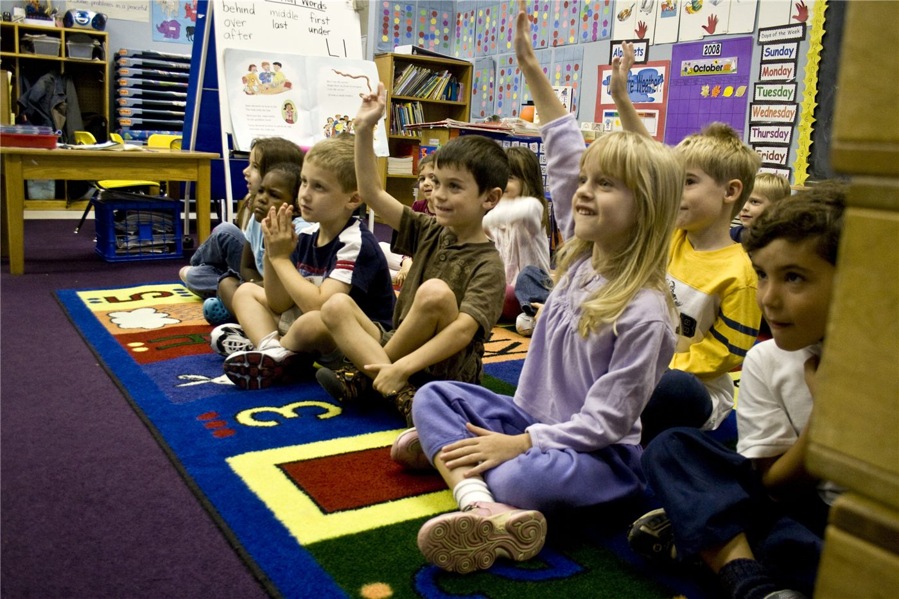

기업 직장 어린이집 보조 늘렸지만…"여전히 문턱 많다"
대만 정부가 기업의 직장 보육시설 설치를 위한 보조를 늘렸지만, 현장에서는 여전히 절차와 비용의 장벽이 크다는 지적이 나온다.
손기요 기자 · 2026.06.18
橋사회·복지

연합보는 대만 정부가 기업이 직장 어린이집(托育기관)을 설치하도록 보조를 확대했지만, 공간·인력·운영 규정 등 여러 관문이 남아 있다고 전했다. 보조만으로는 설치가 늘기 어렵다는 현장의 목소리다.
광고 문의 · 300×250직장 보육은 일과 육아의 병행을 돕는 핵심 인프라다. 출산·양육 부담을 줄여 노동 참여를 높이는 효과가 기대되지만, 중소기업에는 설치·운영 비용이 부담이다.
제도의 실효성은 보조의 규모뿐 아니라 절차의 간소화와 지속적인 운영 지원에 달려 있다. 일회성 지원보다 안정적 운영을 떠받치는 설계가 필요하다는 지적이다.
華橋時報는 일·가정 양립이라는 보편 과제를 화인 가정의 시선에서도 전한다. 보육 인프라의 확충은 이주 가정의 정착에도 직접적인 도움이 된다.
출처·참고 (사실 확인용 — 본문은 직접 재작성)
· 聯合報
· 聯合報